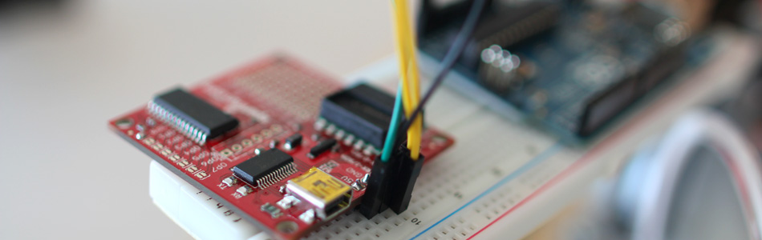

Polar Heart Rate Monitor Interface + Arduino

When you start to talk about biometrics in electronics, heart-rate is usually the first thing to come up. And why not? I think it is often the thing we are most aware of changing when we get excited, nervous, are being active, or very calm. There are several ways of sensing heart rate that dont require lots of heavy equipment and electrodes taped to you. A lot of work has been done on wrist worn IR based sensing, but it tends to be error prone, especially with movement. Currently, the best available method at a reasonable price seems to come from the company Polar. And, what makes it better is that Sparkfun in conjunction with danjuliodesigns, created a microcontroller compatible receiver for the polar monitors. So let's take a look at using the Polar Heart Rate Monitor Interface and getting it running with your arduino.
The annoying thing about all of this is that you do need to wear a sensor on your body to get this going. I picked up this guy off amazon and had pretty good results most of the time.
This transmitter band is a reusable electrode that wirelessly transmits to a receiver. A note when you are testing, the band will only transmit when it is on person, or you have semi-wet thumbs pressed into the sensor plates. Also because it is an electrode, it wants a good connection with your skin... meaning sweat. They sell electrode gel you can use with it for a better connection when the skin is dry, but I never tried it. In the humid summer nights I was testing this in, I never really had an issue.
Hooking It Up
Ok... so this board is capable of a ton of stuff. But we are just looking today at using this with the Arduino, and the simplest way is to get this guy running in I2C mode because it will allow us to get the heart rate from it easily into our Arduino.
I2C is a 2-wire serial connection, so you just need to connect the SDA (Data) and SCL (Clock) lines to your Arduino for communication. On your Arduino (everything but the mega) SDA is on analog pin 4, and SCL is on analog pin 5. On an Arduino Mega, SDA is digital 20, and SCL is digital 21.
The board doesn't come setup for I2C by default, so we need to make a few changes. There are two solder-jumpers on the board that need to be changed to make this happen. The first is SJ1 just to the right of the 5V pin. Remove the solder from there using solder wick or a solder sucker so that the two parts are not connected. (like in the illustration). Next look at the row of pads at the top of the board labeled OP0 - OP7. We need to solder OP0 so the two pads are connected (See the illustration).
Ok, so once you have the board modified and ready for I2C communication, we can actually just power it up with 5v to check if it is able to communicate with the band. With the board on, moisten your thumbs and press them firmly into the back of the band where the electrodes are and hold it less than a food from the monitor board. You should see a green LED on the board start to blink. If it does... Awesome, the band and the board are communicating! If not, try it a bit more, and see if you can get it going.
{kind=link}
When it is actually running, you will need to wear the band on your chest to get a heart rate signal.
code
This code is pretty simple. It will take the info from the sensor band (average of 20 of the samples) and report that back in the Arduino's serial terminal as BPM (beats per minute). If it dosnt have a connection, or the band does not have a good connection to the skin, it will report a BPM of 0.
You should know better than I, but your BPM reading should be between 55 and 140. If you are just sitting around, and you see it around 200, it probably means it has a bad connection. Make sure it has a good connection with your skin, and restart the receiver board/ Arduino. - A note... I did have an hour reading that was very off, but all the other time, it was very accurate.
// Code to retrieve heartrate information from the Polar Heart Rate Monitor Interface via I2C // Part: http://www.sparkfun.com/products/8661 // Article: http://bildr.org/2011/08/heartrate-arduino/ #include "Wire.h" #define HRMI_I2C_ADDR 127 #define HRMI_HR_ALG 1 // 1= average sample, 0 = raw sample void setup(){ setupHeartMonitor(HRMI_HR_ALG); Serial.begin(9600); } void loop(){ int heartRate = getHeartRate(); Serial.println(heartRate); delay(1000); //just here to slow down the checking to once a second } void setupHeartMonitor(int type){ //setup the heartrate monitor Wire.begin(); writeRegister(HRMI_I2C_ADDR, 0x53, type); // Configure the HRMI with the requested algorithm mode } int getHeartRate(){ //get and return heart rate //returns 0 if we couldnt get the heart rate byte i2cRspArray[3]; // I2C response array i2cRspArray[2] = 0; writeRegister(HRMI_I2C_ADDR, 0x47, 0x1); // Request a set of heart rate values if (hrmiGetData(127, 3, i2cRspArray)) { return i2cRspArray[2]; } else{ return 0; } } void writeRegister(int deviceAddress, byte address, byte val) { //I2C command to send data to a specific address on the device Wire.beginTransmission(deviceAddress); // start transmission to device Wire.write(address); // send register address Wire.write(val); // send value to write Wire.endTransmission(); // end transmission } boolean hrmiGetData(byte addr, byte numBytes, byte* dataArray){ //Get data from heart rate monitor and fill dataArray byte with responce //Returns true if it was able to get it, false if not Wire.requestFrom(addr, numBytes); if (Wire.available()) { for (int i=0; i<numBytes; i++){ dataArray[i] = Wire.read(); } return true; } else{ return false; } }
But it's not working!
If it is not working, 99% of the time, it is simply a sensor-band placement issue. Make sure you have a blinking light on the board. If you don't have that light, the band is not communicating with the board. It wont communicate unless it thinks it is on your body, so your skin could be too dry or the placement is off.
If you see the communication light, but nothing in the arduino, make sure you soldered/ unsoldered the solder-jumpers as described above.
Article taken from bildr.org with minor changes - I am the original author of this content